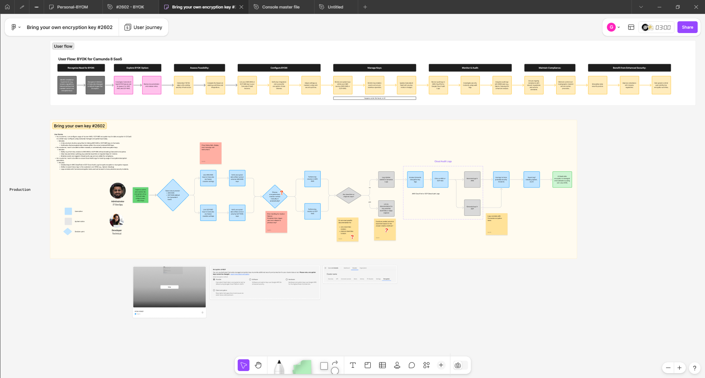

Enabling enterprise clients with customer-managed keys (BYOK) while maintaining ease of use for both clients and internal users on a high-scale platform.
Customer security is a top-tier business requirement but often difficult, hard to implement, and hard to maintain. Enabling our customer to manage their own encryption keys through BYOK while handling the complexity in our product was critical.
As the Senior Product Designer, I led the end-to-end UX journey. My role included discovery and visioning (both user interface and system architecture), detailed UX/UI design, prototyping, developer handoff, and post-launch iteration. I worked closely with our TPM, senior engineers, and stakeholders across product.
Collaborators: a Security Compliance PM who owned the product lifecycle with deep technical domain expertise, two engineering teams (Platform team & Security team), a cross-functional Product Management team, the Customer Success team (collecting customer pain points), and finally teams across Sales and Customer Engineering teams who helped define usability and adoption.
Getting buy-in from upper management (leadership) and engineering stakeholders (to allocate 6 months) was one of the hardest and most important tasks in this project. I worked closely with the TPM and PM on defining deliverables that balanced ambition and feasibility for OKRs.
I led a competitive analysis of BYOK implementations from AWS, Azure, and others, looking at information architecture and workflow design.
I then set up information architecture, focusing on how the BYOK deployment would exist in our existing product ecosystem.
Applied our existing design system to stay consistent with our platform while designing new components (status monitors, alerts, configuration wizards).
Created interactive prototypes in Figma and conducted usability testing with customers who needed BYOK immediately (we were actively in sales conversations with these customers). We focused on the complexity of: migration downtime, KMA deployment, and what support they'd expect from us. I integrated this feedback into a revised flow, and design handover was completed for dev in 4 sprints.
Initially, Product Management wanted the BYOK feature to be available to all customers regardless of plan tier. However, this would have severely complicated the user journey as we would have had to add a lot more onboarding friction to the entire platform.
Trade-off: I worked with PM and led design thinking workshops to show an alternative model: restricting BYOK to Enterprise/Premium Tiers. I argued this would let us "optimize for scale," ensuring the majority of users would not be confused by unnecessary, highly-technical configuration steps.
Resolution: We launched BYOK exclusively for high-value customers. Today, this allows our customer success team to have deep touch points with BYOK early adopters, improving overall product feedback and enterprise usability. We use internal metrics to eventually roll out to lower tiers if adoption proves successful (pending results).
Problem: A major UX risk: our BYOK solution relied on customers self-deploying our "KMA" (Key Management Agent) on their own infrastructure and then configuring it manually via JSON files or config files. This was confusing for non-technical stakeholders.
Resolution: I led the work for designing a step-by-step wizard and detailed configuration guides inside our docs platform. We exposed warnings and validation in-product so users immediately knew if they made errors in config. The goal was to balance power-user flexibility (needing low-level configuration) with user guidance (clear warnings, examples, and verifications).
Our existing design system didn't have patterns for "system status dashboards" or "agent health monitoring" with deeply technical components like error codes and diagnostic logs. I collaborated with our Design Systems team and built custom UI patterns like status pills, alert banners, and connection states. These needed to be easily reusable and documented in Figma. As I refined these components, I exported them back into the DS library to future-proof BYOK design and help other product areas.
Challenge: Security team and Platform Engineering team had very different visions for how BYOK should be scoped: Security wanted to prioritize compliance and zero-friction (for the customer, at the cost of internal complexity), while Platform Engineering wanted to simplify the backend (at the cost of configuration complexity for users).
Approach: I facilitated a series of "design sprint" sessions between engineering, security stakeholders, and PMs, where we co-designed and prioritized critical user journeys. I presented a user journey map showing the key stages of a BYOK lifecycle and had the team prioritize MVP features in a "Must-Have vs. Nice-to-Have" format.
Resolution: We aligned on a tiered approach (v1 = basic functionality for configuration, v2 = automated dashboards with compliance audit logs). This allowed engineering to ship incremental value while designing with future extensibility in mind.
Challenge: Product wanted to ship with a CLI-only interface, citing it was significantly "faster to build." However, user research revealed that decision-makers (IT/Compliance leadership) needed visibility into BYOK status without SSH-ing into terminals. They wanted dashboards.
Approach: I organized a lightweight usability study with 5 target users where I showed two mocks, one CLI, one UI dashboard. Users were confused by CLI-only workflows and found the lack of visibility "stressful." I documented this and presented to leadership and development.
Resolution: The development timeline shifted. We deprioritized some engineering tasks to build a basic dashboard first. Post-launch, the UI interface became our highest-rated feature in our NPS surveys.
BYOK adoption among target customers hit 85% within 3 months, major proof of demand and usability success.
We saw a 40% reduction in support tickets related to configuration (post-launch dashboard updates significantly improved user self-service).
Created 5+ reusable components now being used in dashboards, monitoring tools, and compliance features across the product.
We reduced misconfigured deployments by 30% (measured from internal monitoring + support tickets).
Quote from Customer Success Lead: "This is exactly what we've needed. Customers are thrilled to have control of their keys without sacrificing our ease of use. It's made our enterprise sales conversations dramatically easier."
Dealing with highly technical, B2B enterprise features requires designing for high transparency and extremely clear status updates. Users don't want black-box magic; they want to deeply understand what's happening, especially when it involves security.
While building a technical architecture for BYOK is extremely important, the user perception and trust of the system is equally critical. By constantly surfacing clear "what's going on" status and "why did this fail" feedback, we created transparency without overwhelming non-technical audiences.
Finally, conflict resolution became as important as design execution. Understanding competing stakeholder priorities (compliance vs. speed, UI vs. API-first, power-user vs. simplicity) required proactive facilitation, documentation, and clear tradeoff thinking. When all stakeholders understood the "why" behind decisions, alignment was easier to maintain.